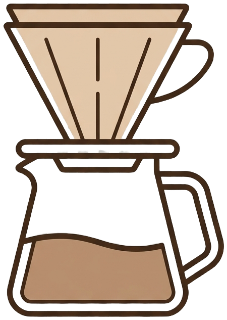

pourō
Pour slowly. Brew deeply.
今日の抽出を整える
抽出方法
レシピ設定
コーヒー量
タップして編集
比率
1:15
レシピ概要
プレビュー
前回の調整
レシピ
抽出ステップ
準備チェック
マイレシピに保存
メソッド詳細
マイレシピ
まだマイレシピはありません
Previewで現在の条件を保存すると、
ここに表示されます。
ここに表示されます。
PAUSED
スケール目標
経過
0:00
180g
180g まで注ぐ
次の注湯まで
8s
この投
+60g
戻る
一時停止
次へ
抽出記録
評価
テイスト
抽出の詳細
メモ
今回の味・気づき
次回の調整
次回変える条件
履歴
抽出の記録

最近の抽出
前回のメモ
抽出履歴
記録はまだありません
一杯淹れて、最初の記録を残しましょう
記録の詳細
履歴の記録
評価
次回の調整
保存された抽出条件
抽出ステップ
豆
—
挽き目
—
湯温
—
ドリッパー
—
落ちきり
—
設定
抽出環境を整える
デフォルト抽出
抽出方法
4:6 Method
コーヒー量
20g
比率
1:15
抽出アシスト
画面をスリープさせない
抽出中に画面が暗くなるのを防ぎます
サウンド合図
注湯タイミングの補助音を鳴らします
ハプティクス合図
対応端末で短い振動を使います
データ管理
履歴を書き出す
CSVを書き出す
Excel / Numbers / Google Sheetsで開ける記録表
詳細データ（JSON）
すべての記録項目を含む完全なデータです
履歴を消去
データについて
記録はこの端末内にのみ保存され、サーバーには送信されません。書き出したファイルは表計算アプリなどで利用できます。
今後のアップデート候補
検討中
マイレシピ機能を検討中です。投数、各投の時刻や注湯量、次ステップの文言、注意点を自分用に登録できる形を想定しています。
- ・オリジナルレシピの作成
- ・各ステップの時刻・注湯量・メモ設定
- ・CSV / JSON による共有・バックアップ
この項目は今後の検討メモです。現在の抽出レシピや履歴データには影響しません。
Pourō は、ハンドドリップの抽出条件と結果を記録する個人用ツールです。